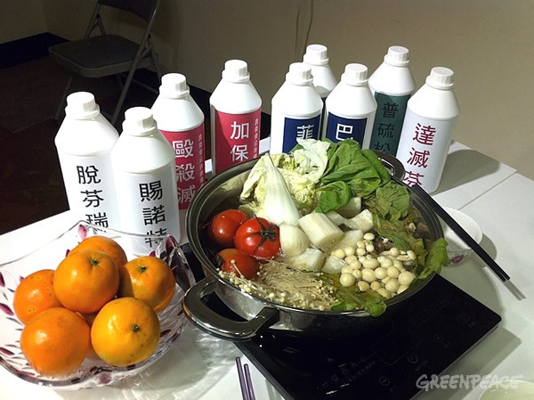

正在準備選購年菜的民眾，是否了解超市及量販店的農藥管理資訊呢？綠色和平再次推出「2016超市及量販店農藥管理評鑑」，讓民眾在採買前，掌握各通路農藥管理現況，作為採購指南。

「2016超市及量販店農藥管理評鑑」包括7-11、全家、大潤發、全聯、家樂福、好市多Costco、頂好、愛買等超市及量販店，評鑑內容依據各通路蔬果抽驗結果、執行禁用農藥和改善措施，再綜合400位秘密客實地訪查評比，除了提供民眾參考之外，同時也讓通路檢視食安與農藥管理缺口，進一步加強。
綠色和平與各通路遊說過程中，絕大部份通路願意以積極態度面對農藥殘留問題，並主動提供食安保障方案。只有Costco在多次聯繫後，仍沒有提供具體農藥殘留管理政策，僅回應食安標準遵照臺灣與美國法規。
綠色和平專案主任羅可容說：「要徹底解決農藥殘留問題，超市及量販店禁用農藥的具體政策和措施是把關重點。公開透明的食安政策是保障消費者知情權的第一步。Costco始終不公開具體農藥管理政策，是企業負面示範。」
Costco販售的本產四季豆在2015年11月綠色和平的抽驗中檢出農藥菲克利殘留超標8倍、達滅芬更超標69倍，明顯違反臺灣法規。若再以Costco回應的美國法律標準來看，則有七項產品不合乎美國法律規範。Costco食安政策上的多重標準，需要儘速釐清以保障消費者權益。
相較於Costco的漠然，同樣是外商的家樂福，則是將禁用多項極劇毒與劇毒農藥的產品比例提高至70%，讓消費者有更多的安心選擇。本土量販店的愛買則自2016年2月起，其南雅分店將停售一般葉菜，專售有機及產銷履歷蔬菜。大潤發持續增加賣場農藥快篩站和有機專區。頂好則是在2016年將大幅提高履歷蔬菜品項，提升蔬果追溯機制。
其它通路方面，7-Eleven僅販售有機和有機轉型期的蔬菜，農藥殘留風險最低，禁用農藥的決心表現最佳。全家便利超商所售蔬果以無農藥殘留為主要訴求。全聯福利中心仍以其在2014年推出的安全蔬果白皮書為改善準則。
消費者的監督力量是超市及量販店禁用農藥的最大動力，消費者可先透過「2016超市及量販店農藥管理評鑑」深入了解通路的農藥管理現況，持續督促落實其措施。綠色和平也將繼續追蹤資訊不公開或執行不佳的通路，要求他們盡到應有的企業責任，提供完整透明的資訊，讓消費者買得開心也吃得安心。